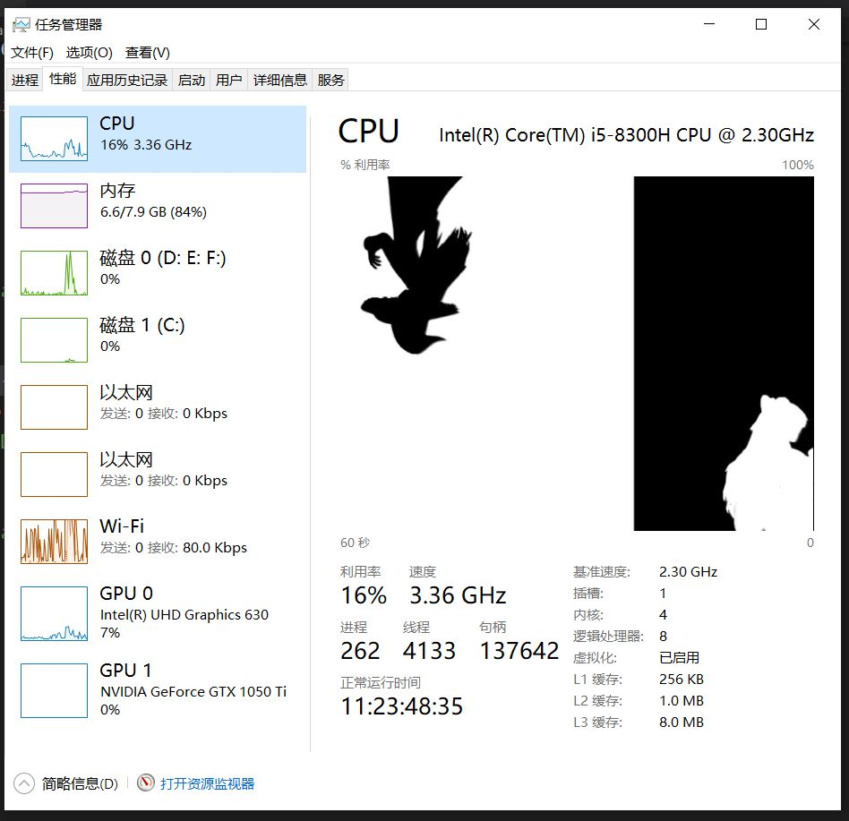

任务管理器播放BadApple
有屏幕的地方就有BadApple!前面做了在控制台显示BadApple了,这一次把画面渲染到任务管理器上！

设计思路
和上一篇差不多,只是设置指定窗口为libvlc的渲染窗口。找到指定的窗口比较复杂。
效果视频
https://www.bilibili.com/video/BV1B64y1u7rv
代码仓库
https://github.com/gongluck/Character-player/tree/taskmgr
//process.cpp
#include "process.h"
#include "../errcode.h"
#include <iostream>
#ifdef _WIN32
#include <windows.h>
#include <TlHelp32.h>
#include <tchar.h>
#include <atlconv.h>
#endif
namespace gprocess
{
int gethandle(const char* processname, std::vector<ProcessInfo>& result)
{
if (processname == nullptr)
{
return G_ERROR_INVALIDPARAM;
}
#ifdef _WIN32
auto hSnapshot = CreateToolhelp32Snapshot(TH32CS_SNAPPROCESS, 0);
USES_CONVERSION;
auto processT = A2T(processname);
if (hSnapshot == INVALID_HANDLE_VALUE || processT == nullptr)
{
std::cerr << __FILE__ << " : " << __LINE__ << " : " << GetLastError() << std::endl;
return G_ERROR_INTERNAL;
}
result.clear();
ProcessInfo info = { 0 };
PROCESSENTRY32 pe = { sizeof(pe) };
auto fOk = FALSE;
for (fOk = Process32First(hSnapshot, &pe); fOk; fOk = Process32Next(hSnapshot, &pe))
{
if (!_tcscmp(pe.szExeFile, processT))
{
info.processid = pe.th32ProcessID;
info.parentid = pe.th32ParentProcessID;
result.push_back(info);
}
}
CloseHandle(hSnapshot);
return G_ERROR_SUCCEED;
#endif
return G_ERROR_SUCCEED;
}
#ifdef _WIN32
BOOL CALLBACK EnumChildWindowCB(HWND h, LPARAM l)
{
auto pinfo = reinterpret_cast<WindowInfo*>(l);
DWORD pid = 0;
GetWindowThreadProcessId(h, &pid);
if (pid == pinfo->processid)
{
auto pchild = std::make_shared<WindowInfo>();
pchild->processid = pid;
pchild->window = h;
pinfo->childs.push_back(pchild);
EnumChildWindows(h, EnumChildWindowCB, reinterpret_cast<LPARAM>(pchild.get()));
}
return TRUE;
}
BOOL CALLBACK EnumWindowCB(HWND h, LPARAM l)
{
auto pinfo = reinterpret_cast<WindowInfo*>(l);
DWORD pid = 0;
GetWindowThreadProcessId(h, &pid);
if (pid == pinfo->processid)
{
auto pchild = std::make_shared<WindowInfo>();
pchild->processid = pid;
pchild->window = h;
pinfo->childs.push_back(pchild);
EnumChildWindows(h, EnumChildWindowCB, reinterpret_cast<LPARAM>(pchild.get()));
}
return TRUE;
}
#endif
int getallwindows(WindowInfo* info)
{
#ifdef _WIN32
if (EnumWindows(EnumWindowCB, reinterpret_cast<LPARAM>(info)) != TRUE)
{
std::cerr << __FILE__ << " : " << __LINE__ << " : " << GetLastError() << std::endl;
return G_ERROR_INTERNAL;
}
return G_ERROR_SUCCEED;
#endif
return G_ERROR_SUCCEED;
}
} // namespace gprocess
//main.cpp
#include <iostream>
#ifdef _WIN32
#include <Windows.h>
#include <tchar.h>
#define ssize_t SSIZE_T
#endif
#include <vlc/vlc.h>
#include "../../Code-snippet/cpp/process/process.h"
#define CHECKEQUALRET(ret, compare)\
if(ret == compare)\
{\
std::cerr << "error ocurred in " << __FILE__\
<< "`s line " << __LINE__\
<< ", error " << ret;\
goto END;\
}
#define CHECKNEQUALRET(ret, compare)\
if(ret != compare)\
{\
std::cerr << "error ocurred in " << __FILE__\
<< "`s line " << __LINE__\
<< ", error " << ret;\
goto END;\
}
int getwindows(const TCHAR* classname,
const gprocess::WindowInfo& info,
std::vector<std::shared_ptr<gprocess::WindowInfo>>& result)
{
std::vector<std::shared_ptr<gprocess::WindowInfo>> tmp;
TCHAR classname_[MAX_PATH] = { 0 };
for (int i = 0; i < info.childs.size(); ++i)
{
GetClassName(reinterpret_cast<HWND>(info.childs[i]->window), classname_, _countof(classname_));
if (_tcscmp(classname_, classname) == 0)
{
tmp.push_back(info.childs[i]);
}
}
for (const auto& each : tmp)
{
result.push_back(each);
}
return 0;
}
int getwindows(const TCHAR* classname,
const std::vector<std::shared_ptr<gprocess::WindowInfo>>& windows,
std::vector<std::shared_ptr<gprocess::WindowInfo>>& result)
{
std::vector<std::shared_ptr<gprocess::WindowInfo>> tmp;
for (int i = 0; i < windows.size(); ++i)
{
getwindows(classname, *windows[i], tmp);
}
for (const auto& each : tmp)
{
result.push_back(each);
}
return 0;
}
int main(int argc, char** argv)
{
libvlc_instance_t* inst_ = nullptr;
libvlc_media_t* media_ = nullptr;
libvlc_media_player_t* player_ = nullptr;
libvlc_media_list_t* list_ = nullptr;
libvlc_media_list_player_t* plist_ = nullptr;
HWND wnd_ = nullptr;
std::vector<gprocess::ProcessInfo> result;
gprocess::WindowInfo windowinfo;
std::vector<std::shared_ptr<gprocess::WindowInfo>> windows;
std::vector<std::shared_ptr<gprocess::WindowInfo>> tmpwindows;
auto ret = gprocess::gethandle("Taskmgr.exe", result);
CHECKNEQUALRET(ret, 0);
windowinfo.processid = result[0].processid;
ret = gprocess::getallwindows(&windowinfo);
CHECKNEQUALRET(ret, 0);
ret = getwindows(TEXT("TaskManagerWindow"), windowinfo, windows);
CHECKNEQUALRET(ret, 0);
ret = getwindows(TEXT("NativeHWNDHost"), windows, tmpwindows);
CHECKNEQUALRET(ret, 0);
windows.clear();
windows.swap(tmpwindows);
ret = getwindows(TEXT("DirectUIHWND"), windows, tmpwindows);
CHECKNEQUALRET(ret, 0);
windows.clear();
windows.swap(tmpwindows);
ret = getwindows(TEXT("CvChartWindow"), windows, tmpwindows);
CHECKNEQUALRET(ret, 0);
CHECKEQUALRET(tmpwindows.size(), 0);
wnd_ = reinterpret_cast<HWND>(tmpwindows[tmpwindows.size() - 1]->window);
inst_ = libvlc_new(0, nullptr);
CHECKEQUALRET(inst_, nullptr);
media_ = libvlc_media_new_path(inst_, argc <= 1 ? "badapple.mp4" : argv[1]);
CHECKEQUALRET(media_, nullptr);
//player_ = libvlc_media_player_new_from_media(media_);
player_ = libvlc_media_player_new(inst_);
CHECKEQUALRET(player_, nullptr);
libvlc_media_player_set_hwnd(player_, reinterpret_cast<void*>(wnd_));
// play loop
list_ = libvlc_media_list_new(inst_);
plist_ = libvlc_media_list_player_new(inst_);
libvlc_media_list_add_media(list_, media_);
libvlc_media_list_player_set_media_list(plist_, list_);
libvlc_media_list_player_set_media_player(plist_, player_);
libvlc_media_list_player_set_playback_mode(plist_, libvlc_playback_mode_loop);
libvlc_media_list_player_play(plist_);
std::cin.get();
END:
if (player_ != nullptr)
{
libvlc_media_player_stop(player_);
libvlc_media_player_release(player_);
player_ = nullptr;
}
if (media_ != nullptr)
{
libvlc_media_release(media_);
media_ = nullptr;
}
if (plist_ != nullptr)
{
libvlc_media_list_player_release(plist_);
plist_ = nullptr;
}
if (list_ != nullptr)
{
libvlc_media_list_release(list_);
list_ = nullptr;
}
if (inst_ != nullptr)
{
libvlc_release(inst_);
inst_ = nullptr;
}
}